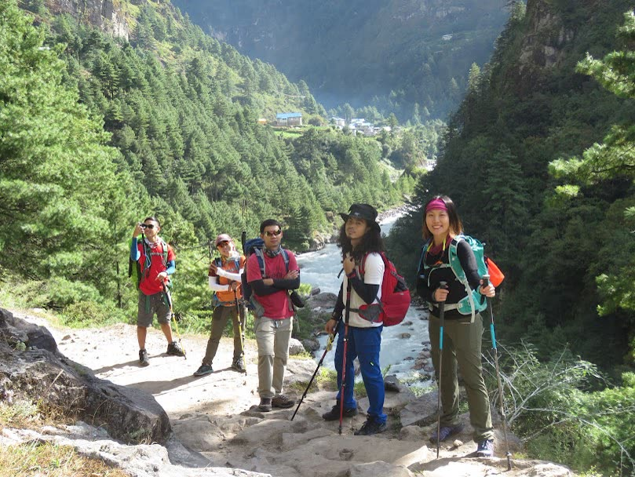
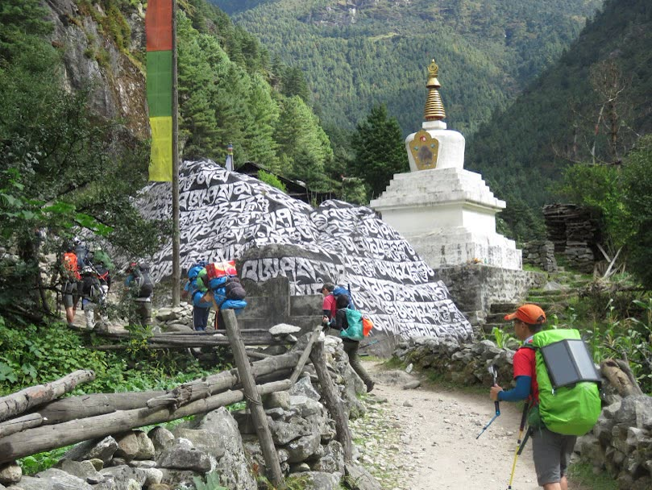
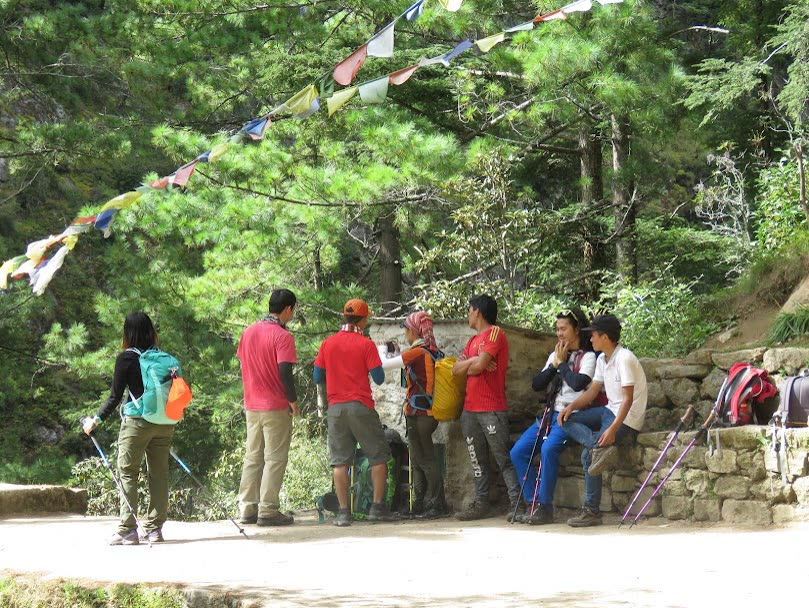
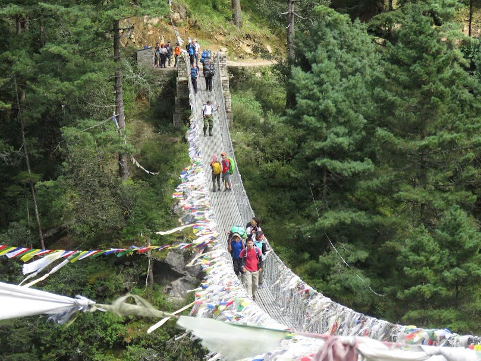
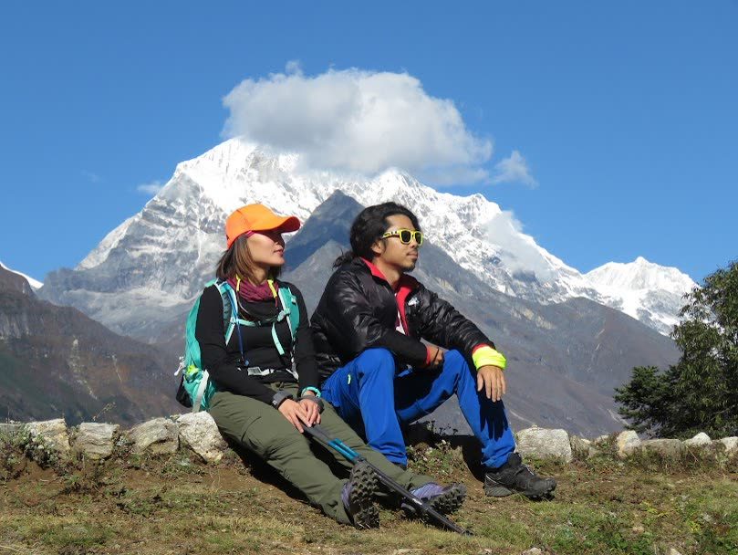
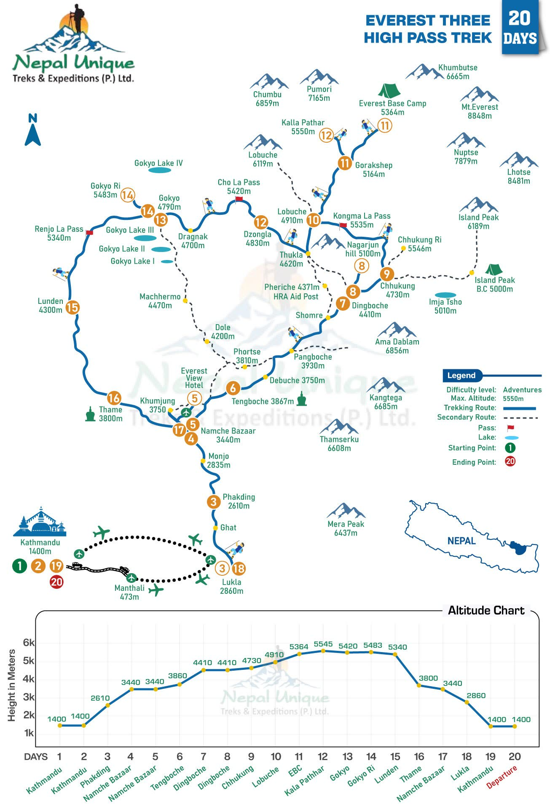

Everest Three High Pass Trek
Everest Three High Pass Trek Embark on the ultimate Everest Three High Passes Trek in 2026/27, A 20-days adventure across Renjo La, Cho La, & Kongma La, offering breathtaking views of Mt Everest, Mt Ama Dablam, Mt Pumori, Mt Nuptse & more. Get the best itinerary & cost details now.





Key Trip Facts
Trek Overview
Trip Highlights
Everest Three High Pass Trek
Embark on the ultimate Everest Three High Passes Trek in 2026/27, A 20-days adventure across Renjo La, Cho La, & Kongma La, offering breathtaking views of Mt Everest, Mt Ama Dablam, Mt Pumori, Mt Nuptse & more. Get the best itinerary & cost details now. Do you wish for an adventurous journey, full of challenges and highly adrenaline-rushing with rewarding views in the trek? Then, the Everest Three High Pass Trek is the right trek for you. Explore the 3 High Passes of the Everest Region Trekking Renjo La Pass (5,338 meters), Cho La Pass (5,368 meters), & Kongma La Pass (5,535 meters). Moreover, immerse into exploring the lifestyle of locals, floras, and faunas, several mountain peaks up in the Himalayas.
The journey begins with an adventurous flight to the Lulka Airport, from where we will head to Phakding. Traversing through the local community of Sherpa and acclimatizing at different altitudes, we pass over Gokyo Renjo La Pass Trek 15 Days and explore the Gokyo Valley Trek. Moving further, we will trek along the rugged terrains and explore the viewpoints we pass over Gokyo Chola Pass Everest Base Camp Trek, finally retracing our way back to the capital.
Passing through protected areas like Sagarmatha National Park and exploring the wilderness in the Himalayas with rugged terrains, we visit three of the highest passes in the Everest region. The trek will offer more than just the views of the landscapes and the mountain peaks. We will also explore the traditions and culture of the Sherpa community and visit the monasteries.
To summarize, this journey will take you through the rugged terrains, and experience the local cuisine and their lifestyle at the extreme. In addition, you will explore the 3 passes in the Everest region along with the 5 lakes in Gokyo Valley and finally a closet view of Mt. Everest from the Kalapatthar viewpoint.
Why choose us for this trek?
The Nepal Unique Treks is a professional & Government-authorized Trekking Agency providing organized adventure trips all over Nepal for over 2 decades. In addition, we have some of the best teams that will ensure you have a great trip without any hassle in every possible manner. Moreover, the guides we have in the team are government license holders and have been in this sector for over a decade.
We provide these services not only in Nepal but also in Bhutan and Tiber. You can customize the itinerary according to your preferences, and we will proceed accordingly on this journey. Below is some additional information on why we are the perfect choice for the Everest Three High Pass Trek:
Our core strengths are designing exceptional itineraries, organizing logistics, and providing knowledgeable guides.
Prioritizing the best experience in the entire journey, we ensure to provide you the best services in every meal served and place accommodated.
Our guides have knowledge and network in multiple regions enabling an extra layer of convenience and support in the trek.
Skilled and experienced guides will help you from the very beginning of the trek, ensuring a better journey.
Permits required for Everest Three High Pass Trek
Permits are special documents that we require for our trekking journey. In our trail, some places are protected, and we can only pass through these areas with a permit. In addition, there is a special permit, Trekker's Information Management System (TIMS) Permit, which allows the government officials to track the trekkers for their well-being and safety. For the Everest Three High Pass Trek, we require the following permits:
1. Sagarmatha National Park Entry Permit
En Route, we will have to pass through Sagarmatha National Park, where we will explore the wilderness of the Himalayas. Established by the Government of Nepal, this national park aims to preserve the rare floras and faunas. Therefore, to enter Sagarmatha National Park, we require a permit. The trekking route consists of passing and entering the Khumbu Region, from where we can explore the Everest Base Camp Trek and all the
2. Khumbu Pasang Lhamu Municipality Entry Permit
places in this region. This permit fee is contributed to supporting local development projects, and infrastructures ensuring the welfare of the Sherpa Community. Moreover, it also allows monitoring of the trekkers for their safety within the protected areas.
3. Trekker's Information Management System (TIMS) Permit
TIMS Permit is a special type of permit that helps government officials track the trekkers, ensuring their safety and well-being. In Nepal Unique Treks, we help you to get these permits without any hassle. Let us streamline the process of getting these permits while you prepare for the trek.
Why is insurance necessary for the Everest Three High Pass Trek?
In an adventurous journey up in the Himalayas, there can be a few cases where we might encounter an emergency. There are multiple reasons which can cause this. And the cost required to tackle during these hard times can be hefty. Therefore, to downsize the potential risk we require proper insurance.
For any Trekking in Nepal, government officials have made it mandatory to have insurance. This insurance comes in handy, especially in emergencies. There are different kinds of insurance you can get before starting this journey. Some of them provide medical coverage, emergency evacuation, cancellation insurance, and many more. However, we highly recommend you take the insurance package that covers all of these.
Even though we will be trekking in the most favorable seasons of the year, there is still a possibility of a sudden change in the weather. Only a simple change in weather can disrupt our trek and can lead to other emergencies as well. Therefore, to ensure things go smoothly even in emergency cases, we recommend you get the full package of insurance. Furthermore, our guides will always be there to assist and navigate you even in emergency cases. This way, we can ensure you have a great journey with all the safety.
Everest Three High Pass Trek Itinerary: Day by Day
20 Days program for Everest Three High Pass Trek. Daily timings and sequences remain flexible according to weather, flight operations, and group pace.
Day 1: Arrival in Kathmandu and Transfer to Hotel
Approx. 1,345 m / 4,413 ft
Welcome to Nepal! As you land at the Tribhuwan International Airport (Kathmandu), you will see the representatives from Nepal Unique Treks waiting for you. They will welcome you with a khada and bouquet and then drive you to the hotel. As you reach the hotel, the staff will service you with a welcome drink. After that, you can check in at the room, and go for a quick rest before going for a stroll of the nearby areas. Around the hotel area, you can find several hotels, cafes, bars, pubs, and even spas to relax and get off the jet lag. By the evening, we invite you for a delicious and fulfilling welcome dinner. After that, we recommend the trekkers rest in the hotel because you have one of the most adventurous treks to Everest Three Pass Trek on your way.
Day 2: Kathmandu Exploration and Trekking Preparation for the Trek
Approx. 1,345 m / 4,413 ft
On the second day, we will not start the trek immediately. Instead, we will go for a quick exploration of the Kathmandu Valley (nearby temples). The guides will take you to visit the Pashupatinath Temple and Swayambhunath Temple. The tour starts after you have your breakfast in the hotel. Our guides will drive you to both of these locations before returning to the hotel. As you return to the hotel, the representatives from Nepal Unique Treks brief you about the Three High Passes Trek in the Everest Region. They will tell you about the entire route, map, and even all the details about the trekking journey. Moreover, the guides will also check whether you have all the necessary trekking gear and documents (including the trekking permits). In the evening, the hotel serves you with dinner before you go for a sound sleep.
Day 3: Drive from Kathmandu to Ramechhap and flight to Lukla (2860 meters) followed by a trek to Phakding or Manzo (2610 meters)
Approx. 2,610 m / 8,563 ft
The journey to the Everest Three Passes Trek begins with a 2 am morning and a 5-hour drive to Ramechhap from Kathmandu. Believe us when we say that this will probably be one of the best drives of your life. This 5-hour drive takes you past winding mountain roads, terraced hillsides, and charming villages before you reach Ramechhap. Moreover, you will also get to see farmers working in the field, cattle grazing, and people starting their days in a typical Nepali way by doing Puja. As you reach Ramechhap or the Manthali Airport, you will board a short but thrilling flight to Lukla, often considered one of the most exciting air routes in the world. This 20-minute flight offers breathtaking aerial views of the Himalayas, with snow-capped peaks. Well, this day's journey does not end after reaching Lukla because we still have a quick trek to complete. Yes, on the third day of the Everest Three High Passes Trek, the guides will take you on a trek from Lukla to Phakding or Manzo (2610 meters). Well, remember that we will be descending rather than ascending on this day so the walk will not be too difficult.
Day 4: Ascend from Phakding to Namche Bazaar (3444 meters) - 6 to 7 hours
Approx. 3,440 m / 11,286 ft
After a delicious and fulfilling breakfast in the guesthouse at Phakding, the trekkers shall be ready to continue on the Three High Passes Trekking journey. You will have to walk for about 6 to 7 hours today as this section of the trek covers a total distance of 9 kilometers. As we leave Namche, the trail continues along the Dudh Koshi River, crossing several suspension bridges, including the famous Hillary Suspension Bridge with prayer flags on both sides of the bridge. Gradually, the trail elevates along the lush rhododendron and pine forests while passing through several smaller settlements, like Monjo. Monjo also has a check post where the trekkers need to get their permits checked before entering the Sagarmatha National Park. As we enter the Sagarmatha National Park, the trekkers can sense the trail starting to get a little challenging and slightly uphill climb. Besides, this is also the point from where we get first glimpses of some of the most popular mountains, including Mount Everest, Lhotse, and Nuptse. In Namche Bazaar, you will be amused by the scenes you see, the settlements, you witness, and the development you feel there. This town, also known as the trading hub of Nepal, stands as one of the most developed and well-settled towns in the entire Khumbu region. Moreover, the colorful houses, bustling markets, and stunning mountain views make Namche one of the best places to rest on the Everest trekking routes. This Sherpa town is not just a trading hub but also a cultural center, with monasteries, bakeries, and museums offering a perfect blend of tradition and modern amenities.
Day 5: Rest or Acclimatization Day in Namche Bazaar (Quick Hike to the Everest View Hotel or Khumjung Village)
Approx. 3,440 m / 11,286 ft
Do you know that Trekking in the Everest Region has an unsaid rule that is followed in almost every trekking journey here? The rule is to stay back in Namche Bazaar for a day to rest or acclimatize in the higher altitude. This rest day is very necessary as we will be at an altitude of 3444 meters, marked as an altitude sickness-prone altitude. As we ascend higher than this, the risk of altitude sickness also increases significantly. However, this rest day does not mean that we will stay idle in the guesthouse. Instead, the guides take you on a quick hike to the Everest View Hotel. Located at an altitude of 3880 meters, this hotel is one of the highest-altitude hotels in the world. This quick hike offers stunning panoramic views of Everest, Ama Dablam, Lhotse, and Thamserku, making the effort worthwhile. Moreover, you also get a chance to take a sip of a warm drink while watching the panoramic view of the Himalayas. Besides, you can also choose the hike to Khumjung Village. This is a traditional Sherpa settlement known for its monastery, where we can see the legendary Yeti scalp. Besides, the village also provides insight into the Sherpa lifestyle. Moreover, the trekkers also get chances to witness stone-built houses, yak pastures, and the famous Khumjung School established by Sir Edmund Hillary. After these adventures of day hikes to Everest View Hotel and Khumjung Village, you will return to the hotel for a delicious dinner and a cozy sleep
Day 6: Trek from Namche Bazaar to Tengboche (3860 meters) - 4 hours
Approx. 3,860 m / 12,664 ft
As you wake up and have your breakfast in Namche Bazaar, the guides will lead you on a trail that takes you to Tengboche. As we leave Namche and walk for some time, the trail gets more and more difficult while delving deeper into the rhododendron and pine forests. Watching the clear morning views of Everest, Ama Dablam, and Thamserku, we make our way to Phunki Thenga, a riverside settlement. As you will be walking at such a high altitude, we recommend the trekkers stay warm and be cautious about the risks of altitude sickness. After taking a short break in Phortse Thanga, we will go for a steady uphill climb, which finally takes us to Tengboche. This place is the home to the oldest and the largest Monastery in the entire Khumbu region, the Tengboche Monastery. Due to that reason, Tengboche also stands as one of the most peaceful and quiet places in the entire Everest region Trekking map. Besides, you will also see many monks performing regular rituals here, listen to the mesmerizing prayers, and indulge yourself in a peaceful and serene environment. Overnight stay and dinner will be arranged in Tengboche by the Nepal Unique Treks representatives.
Day 7: Ascend from Tengboche to Dingboche (4410 meters) - 4 hours
Approx. 4,410 m / 14,469 ft
On this day, you might wake up with the sound of bells tolling in the monastery as the monks start performing rituals and pilgrims start worshiping. After that, you can get freshened up and go for a delicious breakfast in the hotel. Once you are done with the breakfast, the guides will lead a trail that descends through a forest of rhododendrons and juniper trees, where yaks lazily graze along the slopes. Furthermore, we will also cross a wooden bridge over the Imja Khola River in this section of the Everest Three Passes Trekking route before climbing towards Pangboche. Pangboche is one of the oldest Sherpa villages in the Khumbu where the scent of juniper incense drifts from the ancient Pangboche Monastery. Besides, did you know that this spiritual site is believed to house relics of the fabled Yeti? Well, we still have a few hours to walk before concluding the seventh day of the Three High Passes Trek on Everest. From Pangboche, the trekkers can sense significant changes in the surrounding environment. The lush greenery fades into a rugged, windswept terrain, which gives a sign that you are entering the high Himalayan areas. Throughout the journey, you will see Mount Ama Dablam standing tall like a guardian. Within just four hours of walking from Tengboche, we will step feet in Dingboche, a village surrounded by stone-walled fields that protect crops from the relentless mountain winds. In Dingboche, the trekkers can witness locals living in harmony with nature, while farming potatoes, barley, and herding yak. Such an amazing place to be and stroll around, Dingboche stands as one of the best checkpoints of the entire Everest Three Passes Trekking map.
Day 8: Acclimatization Day at Dingboche with a Quick Hike to Nangkartsang Peak
Approx. 4,410 m / 14,469 ft
It's the second acclimatization or rest day in the Everest Three High Passes Trek as we are at an altitude of 4410 meters above sea level. To make the day a little more special, the guides will take you on a quick hike to Nangkartsang Peak. Located at an altitude of 5083 meters, the Nangkartsang hike helps your body adjust to the altitude. Besides, the trail winds up a steep ridge, offering breathtaking panoramic views of Makalu, Lhotse, and Ama Dablam. As you reach the top of the Nangkartsang Peak, you will find yourself surrounded by colorful prayer flags and magnificent views of the Himalayas. Besides, this is also the perfect place to stay for a while and take some photos and videos. However, we recommend the trekkers return as soon as possible because the weather and climatic conditions at the peak can be unpredictable at times. As you return to Dingboche, you can spend the rest of the day strolling around the village, interacting with the locals, and trying out some locally prepared food items. With this, we complete the eighth day of the Everest Three Passes Trek.
Day 9: Trek from Dingboche to Chhukung (4730 meters) - 4 to 5 hours
Approx. 4,730 m / 15,518 ft
As you have already ascended to an altitude of 5083 meters on the previous day, this day's trail might not be very difficult for you. However, we do not mean to make you less concentrated and attentive during the ascend. As you wake up and have your breakfast, the walk on this section of the Everest Three Passes Trekking Trail begins. the trail gently ascends through a vast, open valley where you will notice the towering faces of Lhotse and Ama Dablam. Unlike the dense forests of the lower trails, we need to walk past rugged and windswept areas in the higher areas. However, one thing that we will notice a lot will be small chorten and prayer flags. Chhukung is a small yet essential settlement nestled beneath the imposing south face of Lhotse, that arrives after a steady climb. For climbers ascending on the Island Peak, this village serves as the base camp. As it will not take us much to reach Chhukkung, the trekkers are free to explore the village on their own. However, if you feel like you have extra energy, our guides can even take you on a thrilling hike to the Chhukung Ri. This is the perfect viewpoint to watch a closer view of the glaciers or simply rest with a cup of hot tea while taking in the breathtaking surroundings. Moreover, you also get a chance to enjoy a magical sunset from Chhukung before having dinner and sleeping.
Day 10: Trek to Lobuche (4910 meters) via Kongma La Pass (5535 meters) - 8 to 9 hours
Approx. 4,910 m / 16,109 ft
Get ready with as much stamina and energy as you have because today, the journey will be somewhat more challenging than any previous days. As we have to cover 11 kilometers, walk for 8 to 9 hours, and ascend to an altitude of Kongmala Pass 5535 meters in a single day, our journey starts a little earlier than usual. Remember that this is one of the most challenging sections of the entire Everest Three High Passes Trekking route. Therefore, we recommend the trekkers be ready with all the gear and strictly follow the instructions provided by the guides. As we leave Lobuche, the trail climbs steeply through a rugged, glacial landscape, with cairns and prayer flags marking the way. Besides, the area also feels more remote, as there are fewer people and we can only hear wind blowing from the Himalayas. Upon reaching the Kongma La Pass 5535 m, you will be served by the sight of the endless snow-clad peaks, including Makalu and Nuptse. The descent from Kongma La is steep and technical, leading to the glacial moraine of the Khumbu Glacier. Crossing this vast expanse of ice and rock feels like stepping into another world, surrounded by towering ice formations and deep crevasses. With all these challenges, we reach Lobuche within 8 to 9 hours of leaving Chhukung. We recommend the trekkers go for a well-deserved rest in the hotel or guesthouse after having dinner.
Day 11: Trek to Everest Base Camp (5364 meters) and Return to Gorakshep (5164 meters) - 8 to 9 hours
Approx. 5,180 m / 16,995 ft
Another day calls in for another adventure, thrill, and accomplishment as we get a chance to stand on the Everest Base Camp on this day. As we start the journey after breakfast, we will be walking on a gradually ascending trail that follows the rocky moraine of the Khumbu Glacier. this section of the Everest Three Passes Trekking map through a landscape of ice formations and glacial pools, where each step brings you closer to the base of the world’s highest mountain. After walking for a few hours from Lobuche, we will reach Gorakshep, where the trekkers will have their lunch before ascending towards Everest Base Camp 5364m. At Gorakshep, the trekkers will also leave all the unnecessary items in the hotel and push forward on a challenging yet exciting trek along a rugged trail that leads to the base camp. In the base camp, you will see a lot of prayer flags and so many tents that are set up by the Mount Everest summiteers. You can take your time to collect memories, feel accomplished, and even interact with the climbers before we trace our steps back to Gorakshep. Go for a fulfilling dinner and sound sleep because the Everest Three Passes Trek Package still has a lot to offer you.
Day 12: Early morning Hike to Kalapatthar (5,555 meters) and descend to Dzongla 4830m - 8 to 9 hours
Approx. 4,830 m / 15,846 ft
Today the trekkers need to cover a total distance of 13 kilometers, which requires approximately 8 to 9 hours of walk. As the Kalapatthar Viewpoint is best known for its amazing sunrise view, we will go for an early morning or dawn hike to the Kalapatthar viewpoint. Remember that, we need to reach the viewpoint before sunrise. Due to that reason, we will have to walk in the darkest of the morning, so, we request the trekkers to carry a headlamp and trekking pole. This side mission of the Everest Three Passes Trek is indeed difficult. However, the views, scenarios, and feelings that you get once you reach the top of the Kalapatthar viewpoint are beyond goosebumps. Just wait till the sun arises from the eastern horizon, turning the skyline into a fine golden color. Turn your head around and watch the mountains changing their colors as the sunlight strikes the snow to make them golden. It will certainly be a dramatic experience that must be captured in hearts as well as in the devices. After spending quite a few minutes watching the sunrise from the Kalapatthar viewpoint, we will return to Lobuche. However, the mountains like Everest, Nuptse, Pumori, and countless other peaks that you saw from Kalapatthar stay in your heart and brain. Before descending to Lobuche, we will stop at Gorakshep to collect all the belongings and have breakfast. For lunch, we will take a break in the middle of the journey. However, for dinner, we will reach Dzongla. Leaving the busy trail of Everest Base Camp behind, today’s trek takes you on a quieter, more rugged path toward Dzongla. The journey begins with a gradual descent along the rocky moraine of the Khumbu Glacier, where the silence of the high mountains is occasionally broken by the distant rumble of shifting ice. Besides, the journey will be guarded by the mighty Ama Dablam mountain. On our way to Dzongla, we will get to see some small glacial lakes, barren lands, panoramic mountains, and very rarely, even meet other trekkers. After a few hours of gentle ups and downs, you’ll reach Dzongla, a remote settlement nestled beneath the imposing Cho La Pass. This marks the end of the thirteenth day of the Everest Three Passes Trekking journey. As you reach Dzongla, you can stroll around the village, check out the views, and interact with the locals before returning to the guesthouse for dinner and cozy sleep.
Day 13: Trek from Dzongla to Gokyo via Cho La Pass (5420 meters) - 8 to 9 hours
Approx. 4,680 m / 15,354 ft
A day before, we only had to walk for about 4 to 5 hours and today, we will have our legs moving for 8 to 9 hours again! This is another tiring day in the 19-Day Everest Three Passes Trek as we will be covering a total distance of 14 kilometers today. Our walk begins with a steep climb over rocky terrain, gradually leading to the foot of the glacier-covered pass. As we go higher, we can feel the icy winds picking up and the trail being covered by snow. Due to that reason, there might be a little inconvenience for the trekkers to navigate through the path. Therefore, we recommend you follow the instructions provided by the guides. As you reach the top of the Cho La Pass 5420m, the majestic views will change your perspective. Besides, the prayer flags make the panoramic views of Ama Dablam, Cholatse, and Lobuche East even more scenic. After spending a worthwhile moment in the Cho La Pass, we will set off on another challenging journey descending to Gokyo. At the beginning of the descent, the trail has a sharp, icy drop that covers into a gentler path through yak pastures and glacial streams as we lose altitude. By late afternoon, we will arrive in the peaceful village of Gokyo, nestled beside the third and largest lake. To end this day of the Everest Three High Passes Trek, you can watch the sun setting behind the snow-capped mountain before having dinner and sleeping for the night.
Day 14: Hike to Gokyo Ri and return to Gokyo (5483 meters) - 3 to 4 hours
Approx. 4,800 m / 15,748 ft
On the fifteenth day, we will stay back in Gokyo while also going for a quick and short hike to the Gokyo Ri. Located at an altitude of 5483 meters, Gokyo Ri is the highest altitude for any Gokyo Valley Trekking Package. As we are already on Gokyo, it would be almost unethical to not visit the Gokyo Ri Viewpoint. Therefore, on this day, the guides will lead you on an early morning hike to Gokyo Ri. This trail to one of the finest viewpoints ascends in a zigzag way through the rocky ridge. Upon stepping at the top of the Gokyo Ri viewpoint, the trekkers will witness an awe-inspiring 360-degree panorama of the Himalayas. Additionally, you will also get to see four of the highest peaks in the world, Everest, Lhotse, Makalu, and Cho Oyu. If you look below, you will witness the serenity of the emerald-blue Gokyo Lakes and the sprawling Ngozumpa Glacier. All these make the strenuous climb to the Gokyo Ri Viewpoint completely worthwhile. After spending almost half an hour in the viewpoint, we will return to Gokyo. Make sure that you capture as many photos and videos while spending time in the viewpoint. In Gokyo, we will have spare time to explore the village once again and interact with the locals. Besides, if you still have energy and want to walk a little, you can go visit some other lakes as well. However, we recommend the trekkers to return to the hotel by the evening for dinner and overnight stay.
Day 15: Trek to Lunden (4300 meters) from Gokyo via Crossing Renjo La Pass (5340 meters) - 7 to 8 hours
Approx. 5,340 m / 17,520 ft
As you wake up on the sixteenth day, breakfast will be waiting for you. After you have your breakfast and are all set to continue the journey on the EBC with Three High Passes Trail, we have a strenuous yet exciting walk to go for. Yes, on the 16th day, the trail leads you to arguably the most scenic pass of the Everest region, the Renjo La Pass (5340 meters). The trail climbs gradually along the rugged hillsides before turning into a steep ascent toward the pass. With each step, the turquoise lakes shrink below, while Everest, Lhotse, and Makalu rise grandly in the distance. It takes about 3 to 4 hours for us to reach from Gokyo to the Renjo La Pass covering a total distance of about 4 to 5 kilometers. Most parts of this trail comprise steep climbs and rugged landforms. However, as you reach the pass, the prayer flags and panoramic views of the Himalayas make you forget all the strength you had invested in reaching here. Take your time to capture images and videos while also experiencing the chilling Himalayan breeze. We utilize the next 3 to 4 hours to descend towards Lunden, a beautiful and scenic settlement located at an altitude of 4300 meters above sea level. Take proper care while descending as you need to walk through loose scree and icy paths. As you descend into the remote Bhote Koshi Valley, the landscape transforms, with yak pastures and traditional stone houses dotting the terrain. Take your time to rest in Lunden as you have just come from one of the most difficult sections of the Everest Three Passes Trekking map.
Day 16: Trek to Thame (3800 meters) from Lunden - 4 to 5 hours
Approx. 3,800 m / 12,467 ft
Now that we have explored all three passes, the Everest Base Camp, and the Kalapatthar viewpoint, it is time to descend. On the seventeenth day, we begin the descending journey. After having breakfast in Lunden, the guides take you through the remote Bhote Koshi Valley, following an ancient trade route that once connected Tibet and Nepal. Besides, we can witness the landscape shifting from barren, high-altitude terrain to greener pastures, where yaks graze peacefully. This marks the end of the struggling walk in the Everest Three High Passes Trek. It takes about 4 to 5 hours for us to reach Lunden to Thame, covering a distance of 8 kilometers. As we descend lower, you will also notice some small stone houses along the hillside. Moreover, we will also pass through traditional Sherpa villages, with prayer wheels spinning gently in the mountain breeze and Mani walls inscribed with sacred Buddhist mantras on our way to Thame. Did you know that Thame is known to be one of the oldest Sherpa villages in the entire Khumbu region? Additionally, this place also sits as a home to one of the significant monasteries of this region, the Thame Monastery. Here, you can delve deep into Buddhism, watch monks and pilgrims performing rituals, and experience a peaceful and calm environment. In the evening, we encourage trekkers to interact with the locals and stroll around the village before dinner.
Day 17: Trek to Namche Bazar from Thame - 4 to 5 hours
Approx. 3,440 m / 11,286 ft
On the eighteenth day of the Three Passes Trek in the Everest region, we will leave Thame and proceed towards the heaven of Sherpa settlement, the Namche Bazaar. A 4 to 5 hours long walk to cover about 9 kilometers of distance, which drops us to an altitude of 3,444 meters above sea level. As we leave Thame, the trekkers will notice drastic changes in the surrounding environment as the trail passes through lush rhododendrons and pine forests. Moreover, this section of the trail is also well-developed as compared to the higher parts of this trekking route. The trail descends gently alongside the Bhote Koshi River, passing through picturesque Sherpa villages like Thamo, where you might spot monks and nuns from the local monastery going about their daily rituals. Mani walls, prayer flags, and small stupas mark the way, reminding trekkers of the deep-rooted Buddhist traditions in this region. As you approach Namche Bazaar, you will start seeing many tea houses, developed settlements, and even more facilities. Take your time to rest in Namche Bazaar while also enjoying facilities in the bakeries, hotels, ATMs, etc.
Day 18: Trek to Lukla from Namche Bazaar - 7 to 8 hours
Approx. 2,860 m / 9,383 ft
Today marks the day when the trekkers will cover one of the longest distances in a single day throughout the Everest Base Camp with Three Passes Trek. Yes, Lukla is about 18 kilometers far from Namche Bazaar but this distance will be covered just within 7 to 8 hours. Furthermore, as this will be a descending journey along a well-developed and densely settled area of the Everest Trekking region, you might not be as tired as you had been at the higher altitude or during the ascending journey. Furthermore, the stone-paved trails lead you past the small villages of Monjo, Jorsalle, and Phakding, where trekkers and locals share warm smiles and greetings. As we finally reach Lukla, the air feels richer in oxygen, and the landscape becomes more vibrant. Moreover, arriving back to Lukla also marks the last day on the Everest Three High Passes Trekking map or route. We will stay back in Lukla for the nineteenth day before returning to Kathmandu. Take your time to enjoy the last day in the Everest region and breathe the cool breeze coming from Mount Everest to the fullest.
Day 19: back to Manthali from Lukla and same day drive to Kathmandu
Approx. 1,345 m / 4,413 ft
As you wake up and have the last breakfast in the Everest region, the guides will take you to the Tenzing & Hilary Airport. From there, we will board a 20-minute long flight to Manthali or Ramechhap. This will again be one of the most scenic and adventurous flights you will ever go for in Nepal. As the plane takes you beyond the clouds, you will have one last chance to wave goodbye to the Everest Three Passes Trekking route or the Everest region. From Manthali, we will board a tourist bus that will drive us back to Kathmandu in about 5 hours. Another chance to watch out of the window and see some of the best views. As we reach Kathmandu and the bus drops you at your hotel, we officially end the 20-Day Three Passes Trek in the Everest region.
Day 20: Final Departure of Everest Three High Pass Trek. 1345
Approx. 1,345 m / 4,413 ft
The final day of Everest Three High Pass Trek. If you are traveling back to your home country, our guides will take you to the international Airport in a private vehicle. However, if you want to stay back in Nepal and go for some other tours and hikes, you can book those with us as well. The Nepal Unique Treks team will be more than happy to serve you with adventure and insights. However, one thing that happened on this day is that we officially put an end to the Everest Three High Pass Trek.
What is Included (Regular Package)
What is Excluded
Booking Dates & Availability
Packing List for Everest Three High Pass Trek
Essential Info: Down jackets and sleeping bags can be rented/arranged per package inclusions.High-Altitude Trail Gear (6 items)
Cold-Weather Layering System (5 items)
Sleep, Health & Permits (3 items)
Read before you book: Everest Three High Pass Trek
Practical logistics derived directly from this package's route facts, inclusions, and elevation profile.
Accommodation & Meals (Hotel, Lodge & Tea House)
Accommodation follows the package grade (Hotel, Lodge & Tea House) in Kathmandu and along the Everest route. Check your package Includes section for included meals and Kathmandu hotel nights.
Permits & Local Logistics
Transportation is arranged via Flight & Private Car. Applicable permits listed in the package inclusions are arranged by Nepal Unique Treks prior to departure.
Route Difficulty & Elevation (5,550 m)
Everest Three High Pass Trek is rated Adventurous with a maximum elevation of 5,550 m. Follow your guide's pacing and stay hydrated throughout the 20 Days itinerary.
Best Time to Visit (Spring, Monsoon and Autumn)
Recommended operating season on the source page: Spring, Monsoon and Autumn. Additional official notes from the source page follow below.
Traveller Useful Information
Everest Three High Pass Trek takes you through the demanding yet rewarding Kongma La, Cho La, and Renjo La passes. These high-altitude crossings challenge you at every step while offering breathtaking views all along the trail. Moreover, each pass presents unique landscapes, from glacial moraines to snow-covered ridges.
An adventurous flight to Lukla, one of the world’s most thrilling airports. With an aerial view of the snow-capped mountains, rivers, deep gorges, and lush hills, the 30-minute flight will be much more memorable.
Namche Bazaar, a vibrant Sherpa town, serves as a major trading hub in the Everest region. Up in the Himalayas, this town is quite developed but still retains its traditional culture and religion.
This UNESCO-listed park, Sagarmatha National Park is home to rare wildlife like musk deer, Himalayan tahr, and the elusive snow leopard. In addition, rhododendron forests, alpine meadows, and glacial rivers paint a diverse landscape.
A sunrise hike to Gokyo Ri rewards trekkers with panoramic views of Everest, Lhotse, and Makalu. The sight of Ngozumpa Glacier, the longest in Nepal, is stunning to view. In addition, the 5 lakes in the Gokyo Valley are also majestic to view in the Himalayas.
Kala Patthar is the best viewpoint for an up-close view of Everest’s mighty south face. Reaching this viewpoint at sunrise is a surreal experience, as golden light illuminates the peaks. At 5,545 meters, it’s the highest point of the trek and a true highlight of the journey.
The Everest Three Pass Trek is a highly challenging trek that requires trekkers to have good fitness and stamina. It involves significant physical challenges due to steep ascents, long days of hiking, and the demands of high-altitude trekking.
The trek involves crossing three high-altitude passes; Renjo La Pass (5,465 meters), Cho La Pass (5,420 meters), and Kongma La Pass (5,535 meters). As a result, trekkers are exposed to the risks of altitude sickness, so acclimatization days are essential to ensure safe progression.
Additionally, the trek involves long days of hiking (7–9 hours) which requires physical stamina and mental resilience. While not requiring technical mountaineering skills, there are challenging sections that involve glacier crossings, icy slopes, and narrow ridges requiring strong endurance. Furthermore, due to the high altitudes and unpredictable weather, trekkers should be prepared for cold, wind, and possible snow, especially at the passes.
In summary, the Everest Three Pass Trek is physically demanding, mentally tough, and a rewarding adventure in the Everest region. Moreover, with good physical condition and mental preparation, one can complete this journey without having much difficulty.
Regarding transportation, the Everest Three High Pass Trek requires a combination of flight, and road travel along with a helicopter(optional). After you land at Tribhuvan International Airport, our private vehicle will escort you to your respective hotels. Moreover, after the completion of the trek, the same vehicle will be available for you to drop off at the airport.
The journey starts with an adventurous flight to Lukla. The duration is around 30 to 40 minutes during which you can get an aerial view of the mountain peak, lush hills, deep gorges, and rivers. However, flights often depend on weather conditions, leading to delays or cancellations. If flights get canceled, trekkers may need to drive to Manthali Airport in Ramechhap for an alternative flight to Lukla. However, you have an option to fly via helicopter as well which can be a bit costly. But, this will allow you to reach Lukla on the same day and continue with the journey without any delay.
Once in the Everest region, walking is the only mode of transportation. There are no roads, and yaks, mules, and porters carry supplies along the trails. Well-marked footpaths connect villages, making navigation easier. In case of emergencies, helicopter evacuations are available, but having proper travel insurance is crucial.
Out of four seasons, the Spring & Autumn seasons are considered the best trek for the Everest Three High Pass Trek. Moreover, the possibility of sudden changes in the weather conditions is minimal. Therefore, we can experience all the stunning views all along the trail in our journey in these seasons. Each season offers unique experiences, but spring and autumn provide the best weather and visibility.
Spring (March to May) is one of the most popular times for trekking. The weather remains stable, and temperatures are moderate. Rhododendrons bloom across the hills, adding vibrant colors to the trails. Clear skies offer breathtaking views of Everest and surrounding peaks. However, it is also a busy season, so expect more trekkers on the route.
Autumn (September to November) is another ideal season. The monsoon clears the air, leaving crisp skies and excellent visibility. Temperatures are mild, making trekking comfortable. The landscapes appear fresh, with golden forests and snow-capped peaks creating a stunning contrast. The fallen leaves and the flowers create a beautiful carpet of orange foliage en route.
Winter (December to February) brings freezing temperatures, especially at high altitudes. The trails are quieter, and the mountains look even more majestic under a fresh layer of snow. However, extreme cold and icy paths can make trekking challenging. Only experienced trekkers should attempt the route in winter.
Monsoon (June to early September) is the least favorable season due to heavy rainfall, slippery trails, and frequent flight disruptions. The views remain hidden behind clouds, and leeches infest lower-altitude trails. However, fewer trekkers mean a peaceful journey for those willing to face the challenges.
After a tiring trek during the day time, a good meal and a good sleep are what we require. Getting proper food with a good amount of comfortable sleep is crucial as we need that energy for the next day to trek as well. In Everest Three High Pass Trek, there are a decent amount of options to choose from for accommodation and meals as well.
For accommodation, most of the time we will stay in teahouses, which offer simple rooms with twin beds, blankets, and pillows with some basic amenities. However, during the initial days of the trek, some lodges provide private rooms with attached bathrooms, while higher-up, shared restrooms are common. Some teahouses also offer hot showers and charging services for an extra fee. But everywhere we stay in this entire trek, we get a scenic view from the teashops and the lodges.
Similarly for the food, the menus in teahouses feature a variety of meals, especially traditional Nepali, Tibetan, and basic Western dishes. Dal Bhat (rice, lentil soup, and vegetables) is a simple traditional Nepalese cuisine that provides energy for long trekking days. Other options include noodles, soups, momos, and pancakes. As we ascend, food prices increase due to the difficulty of transporting supplies. Meat is available but not always fresh, so sticking to vegetarian meals is a safer choice.
While trekking in the Himalayas, altitude sickness is a common challenge for adventurers. As you ascend to higher elevations, oxygen levels decrease, making it harder for your body to adapt. This condition, also known as Acute Mountain Sickness (AMS), can cause nausea, headaches, dizziness, fatigue, and shortness of breath.
Moreover, ignoring these symptoms can lead to more severe conditions like High Altitude Pulmonary Edema (HAPE) or High Altitude Cerebral Edema (HACE). Furthermore, both of these conditions require immediate medical attention. Hence, understanding altitude sickness and taking the right precautions can help you stay safe and enjoy your journey.
The best way to prevent AMS is to follow a proper acclimatization schedule. Gradually ascending allows your body to adjust to lower oxygen levels. Most high-altitude treks include rest days to aid acclimatization. In addition, hydration is equally important. Furthermore, eating energy-rich foods, avoiding alcohol and caffeine, and maintaining a steady pace can also help. Additionally, medications like Diamox can assist in acclimatization, but they should be taken only after consulting a doctor.
By following proper acclimatization techniques, staying hydrated, and recognizing symptoms early, you can reduce the risks of altitude sickness. The Himalayas offer breathtaking views and unforgettable experiences, but safety should always come first.
It is necessary to pack all the things we require on the trek beforehand. As we ascend in our journey, the chances of getting different items are lesser. Therefore, we must pack everything we require for this journey before we start this trek. We have created a list of items that you are required to pack:
Waterproof Trekking Shoes
Thick Warm Woolen Socks
Trekking Trousers
Thermal T-shirt (Long Sleeves)
Down Jacket
Waterproof Jacket
Warm Waterproof Gloves
Headlight for Night or Sunrise Hike
High-Quality Trekking Poles
Day Backpack
Waterproof Bag
Thermal Water Bottle
First Aid Kit
Power Bank
Snacks (Energy Bars and Power Gel)
Trekking Trail Map
Mobile Phone and Power Bank for Mobile Charging
Padlock and Key for Safe Backpack
Sun protection cream, wet wipes, and hand sanitizer
Sleeping bags
Sunglasses, sun hat, or woolen cap
Regarding the booking process for this journey, we have multiple options. You can directly message us on WhatsApp, Zalo, or Viber at +9779851023285. Also, you can email us at info@nepaluniquetreks.com or nepaluniquetreks@gmail.com. Moreover, we also customize the itinerary according to your requirements and make sure your trip goes according to your plan.
After you choose how you want to proceed with the itinerary, for the booking we require a 30% deposit to secure your spot. In addition, you can communicate with our team directly regarding payment methods.
Once your booking is confirmed, we will provide you with additional information to help you prepare for your trip. If you have any questions about the booking process, feel free to contact us anytime.
Altitude Profile of Everest Three High Pass Trek
Weather on Everest Three High Pass Trek
Everest Three High Pass Trek Route Map

Book This Trek
Contact our Kathmandu coordinators using the booking panel for private or fixed-group departures.
Trip Feedback
Explore verified traveller stories or leave feedback on Nepal Unique Treks.
Visit Nepal Unique Treks